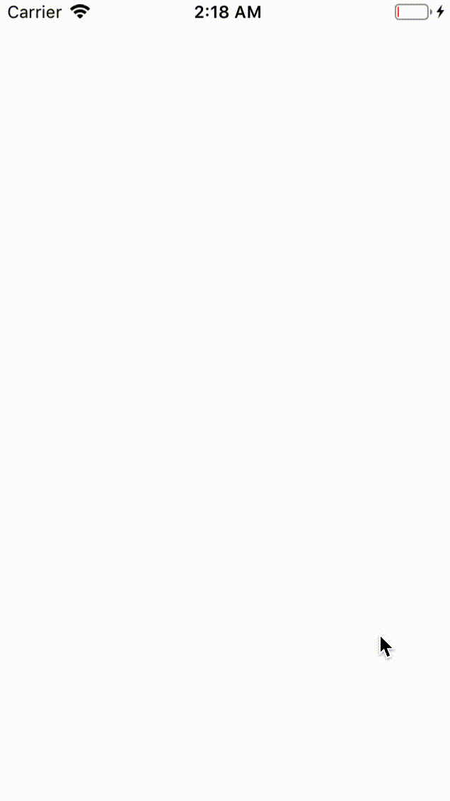
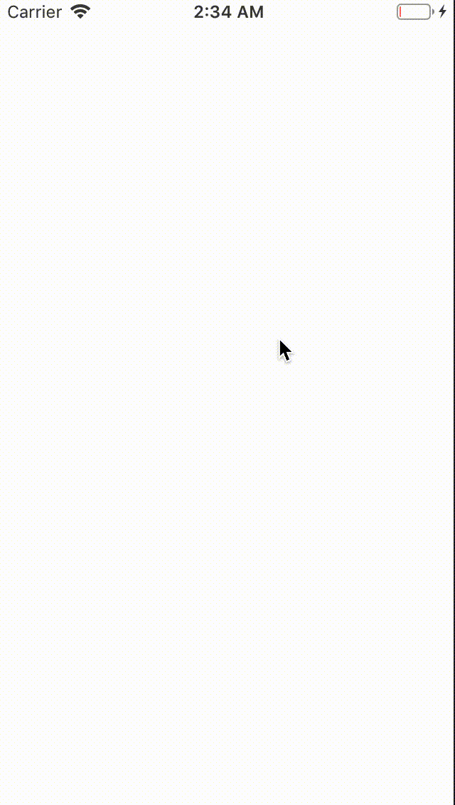
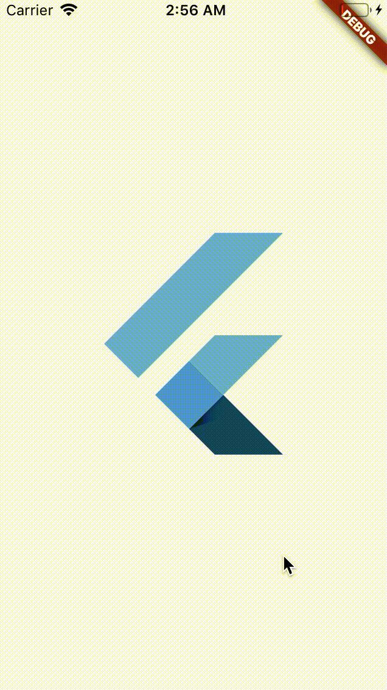
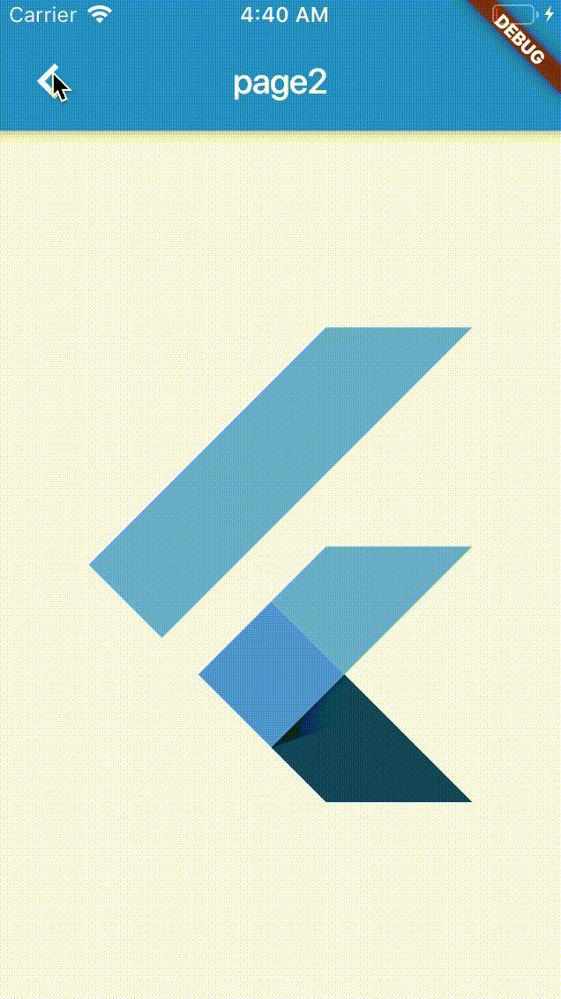

- 00 开篇词 为什么每一位大前端从业者都应该学习Flutter？.md.html
- 01 预习篇 · 从0开始搭建Flutter工程环境.md.html
- 02 预习篇 · Dart语言概览.md.html
- 03 深入理解跨平台方案的历史发展逻辑.md.html
- 04 Flutter区别于其他方案的关键技术是什么？.md.html
- 05 从标准模板入手，体会Flutter代码是如何运行在原生系统上的.md.html
- 06 基础语法与类型变量：Dart是如何表示信息的？.md.html
- 07 函数、类与运算符：Dart是如何处理信息的？.md.html
- 08 综合案例：掌握Dart核心特性.md.html
- 09 Widget，构建Flutter界面的基石.md.html
- 10 Widget中的State到底是什么？.md.html
- 11 提到生命周期，我们是在说什么？.md.html
- 12 经典控件（一）：文本、图片和按钮在Flutter中怎么用？.md.html
- 13 经典控件（二）：UITableView_ListView在Flutter中是什么？.md.html
- 14 经典布局：如何定义子控件在父容器中排版的位置？.md.html
- 15 组合与自绘，我该选用何种方式自定义Widget？.md.html
- 16 从夜间模式说起，如何定制不同风格的App主题？.md.html
- 17 依赖管理（一）：图片、配置和字体在Flutter中怎么用？.md.html
- 18 依赖管理（二）：第三方组件库在Flutter中要如何管理？.md.html
- 19 用户交互事件该如何响应？.md.html
- 20 关于跨组件传递数据，你只需要记住这三招.md.html
- 21 路由与导航，Flutter是这样实现页面切换的.md.html
- 22 如何构造炫酷的动画效果？.md.html
- 23 单线程模型怎么保证UI运行流畅？.md.html
- 24 HTTP网络编程与JSON解析.md.html
- 25 本地存储与数据库的使用和优化.md.html
- 26 如何在Dart层兼容Android_iOS平台特定实现？（一）.md.html
- 27 如何在Dart层兼容Android_iOS平台特定实现？（二）.md.html
- 28 如何在原生应用中混编Flutter工程？.md.html
- 29 混合开发，该用何种方案管理导航栈？.md.html
- 30 为什么需要做状态管理，怎么做？.md.html
- 31 如何实现原生推送能力？.md.html
- 32 适配国际化，除了多语言我们还需要注意什么_.md.html
- 33 如何适配不同分辨率的手机屏幕？.md.html
- 34 如何理解Flutter的编译模式？.md.html
- 35 Hot Reload是怎么做到的？.md.html
- 36 如何通过工具链优化开发调试效率？.md.html
- 37 如何检测并优化Flutter App的整体性能表现？.md.html
- 38 如何通过自动化测试提高交付质量？.md.html
- 39 线上出现问题，该如何做好异常捕获与信息采集？.md.html
- 40 衡量Flutter App线上质量，我们需要关注这三个指标.md.html
- 41 组件化和平台化，该如何组织合理稳定的Flutter工程结构？.md.html
- 42 如何构建高效的Flutter App打包发布环境？.md.html
- 43 如何构建自己的Flutter混合开发框架（一）？.md.html
- 44 如何构建自己的Flutter混合开发框架（二）？.md.html
- 特别放送 温故而知新，与你说说专栏的那些思考题.md.html
- 结束语 勿畏难，勿轻略.md.html
- 捐赠
22 如何构造炫酷的动画效果？
你好，我是陈航。
在上一篇文章中，我带你一起学习了Flutter中实现页面路由的两种方式：基本路由与命名路由，即手动创建页面进行切换，和通过前置路由注册后提供标识符进行跳转。除此之外，Flutter还在这两种路由方式的基础上，支持页面打开和页面关闭传递参数，可以更精确地控制路由切换。
通过前面第12、13、14和15篇文章的学习，我们已经掌握了开发一款样式精美的小型App的基本技能。但当下，用户对于终端页面的要求已经不再满足于只能实现产品功能，除了样式美观之外，还希望交互良好、有趣、自然。
动画就是提升用户体验的一个重要方式，一个恰当的组件动画或者页面切换动画，不仅能够缓解用户因为等待而带来的情绪问题，还会增加好感。Flutter既然完全接管了渲染层，除了静态的页面布局之外，对组件动画的支持自然也不在话下。
因此在今天的这篇文章中，我会向你介绍Flutter中动画的实现方法，看看如何让我们的页面动起来。
Animation、AnimationController与Listener
动画就是动起来的画面，是静态的画面根据事先定义好的规律，在一定时间内不断微调，产生变化效果。而动画实现由静止到动态，主要是靠人眼的视觉残留效应。所以，对动画系统而言，为了实现动画，它需要做三件事儿：
- 确定画面变化的规律；
- 根据这个规律，设定动画周期，启动动画；
- 定期获取当前动画的值，不断地微调、重绘画面。
这三件事情对应到Flutter中，就是Animation、AnimationController与Listener：
- Animation是Flutter动画库中的核心类，会根据预定规则，在单位时间内持续输出动画的当前状态。Animation知道当前动画的状态（比如，动画是否开始、停止、前进或者后退，以及动画的当前值），但却不知道这些状态究竟应用在哪个组件对象上。换句话说，Animation仅仅是用来提供动画数据，而不负责动画的渲染。
- AnimationController用于管理Animation，可以用来设置动画的时长、启动动画、暂停动画、反转动画等。
- Listener是Animation的回调函数，用来监听动画的进度变化，我们需要在这个回调函数中，根据动画的当前值重新渲染组件，实现动画的渲染。
接下来，我们看一个具体的案例：让大屏幕中间的Flutter Logo由小变大。
首先，我们初始化了一个动画周期为1秒的、用于管理动画的AnimationController对象，并用线性变化的Tween创建了一个变化范围从50到200的Animaiton对象。
然后，我们给这个Animaiton对象设置了一个进度监听器，并在进度监听器中强制界面重绘，刷新动画状态。
接下来，我们调用AnimationController对象的forward方法，启动动画：
class _AnimateAppState extends State<AnimateApp> with SingleTickerProviderStateMixin {
AnimationController controller;
Animation<double> animation;
@override
void initState() {
super.initState();
//创建动画周期为1秒的AnimationController对象
controller = AnimationController(
vsync: this, duration: const Duration(milliseconds: 1000));
// 创建从50到200线性变化的Animation对象
animation = Tween(begin: 50.0, end: 200.0).animate(controller)
..addListener(() {
setState(() {}); //刷新界面
});
controller.forward(); //启动动画
}
...
}
需要注意的是，我们在创建AnimationController的时候，设置了一个vsync属性。这个属性是用来防止出现不可见动画的。vsync对象会把动画绑定到一个Widget，当Widget不显示时，动画将会暂停，当Widget再次显示时，动画会重新恢复执行，这样就可以避免动画的组件不在当前屏幕时白白消耗资源。
我们在一开始提到，Animation只是用于提供动画数据，并不负责动画渲染，所以我们还需要在Widget的build方法中，把当前动画状态的值读出来，用于设置Flutter Logo容器的宽和高，才能最终实现动画效果：
@override
@override
Widget build(BuildContext context) {
return MaterialApp(
home: Center(
child: Container(
width: animation.value, // 将动画的值赋给widget的宽高
height: animation.value,
child: FlutterLogo()
)));
}
最后，别忘了在页面销毁时，要释放动画资源：
@override
void dispose() {
controller.dispose(); // 释放资源
super.dispose();
}
我们试着运行一下，可以看到，Flutter Logo动起来了：

图1 动画示例
我们在上面用到的Tween默认是线性变化的，但可以创建CurvedAnimation来实现非线性曲线动画。CurvedAnimation提供了很多常用的曲线，比如震荡曲线elasticOut：
//创建动画周期为1秒的AnimationController对象
controller = AnimationController(
vsync: this, duration: const Duration(milliseconds: 1000));
//创建一条震荡曲线
final CurvedAnimation curve = CurvedAnimation(
parent: controller, curve: Curves.elasticOut);
// 创建从50到200跟随振荡曲线变化的Animation对象
animation = Tween(begin: 50.0, end: 200.0).animate(curve)
运行一下，可以看到Flutter Logo有了一个弹性动画：

图2 CurvedAnimation 示例
现在的问题是，这些动画只能执行一次。如果想让它像心跳一样执行，有两个办法：
- 在启动动画时，使用repeat(reverse: true)，让动画来回重复执行。
- 监听动画状态。在动画结束时，反向执行；在动画反向执行完毕时，重新启动执行。
具体的实现代码，如下所示：
//以下两段语句等价
//第一段
controller.repeat(reverse: true);//让动画重复执行
//第二段
animation.addStatusListener((status) {
if (status == AnimationStatus.completed) {
controller.reverse();//动画结束时反向执行
} else if (status == AnimationStatus.dismissed) {
controller.forward();//动画反向执行完毕时，重新执行
}
});
controller.forward();//启动动画
运行一下，可以看到，我们实现了Flutter Logo的心跳效果。

图3 Flutter Logo心跳
AnimatedWidget与AnimatedBuilder
在为Widget添加动画效果的过程中我们不难发现，Animation仅提供动画的数据，因此我们还需要监听动画执行进度，并在回调中使用setState强制刷新界面才能看到动画效果。考虑到这些步骤都是固定的，Flutter提供了两个类来帮我们简化这一步骤，即AnimatedWidget与AnimatedBuilder。
接下来，我们分别看看这两个类如何使用。
在构建Widget时，AnimatedWidget会将Animation的状态与其子Widget的视觉样式绑定。要使用AnimatedWidget，我们需要一个继承自它的新类，并接收Animation对象作为其初始化参数。然后，在build方法中，读取出Animation对象的当前值，用作初始化Widget的样式。
下面的案例演示了Flutter Logo的AnimatedWidget版本：用AnimatedLogo继承了AnimatedWidget，并在build方法中，把动画的值与容器的宽高做了绑定：
class AnimatedLogo extends AnimatedWidget {
//AnimatedWidget需要在初始化时传入animation对象
AnimatedLogo({Key key, Animation<double> animation})
: super(key: key, listenable: animation);
Widget build(BuildContext context) {
//取出动画对象
final Animation<double> animation = listenable;
return Center(
child: Container(
height: animation.value,//根据动画对象的当前状态更新宽高
width: animation.value,
child: FlutterLogo(),
));
}
}
在使用时，我们只需把Animation对象传入AnimatedLogo即可，再也不用监听动画的执行进度刷新UI了：
MaterialApp(
home: Scaffold(
body: AnimatedLogo(animation: animation)//初始化AnimatedWidget时传入animation对象
));
在上面的例子中，在AnimatedLogo的build方法中，我们使用Animation的value作为logo的宽和高。这样做对于简单组件的动画没有任何问题，但如果动画的组件比较复杂，一个更好的解决方案是，将动画和渲染职责分离：logo作为外部参数传入，只做显示；而尺寸的变化动画则由另一个类去管理。
这个分离工作，我们可以借助AnimatedBuilder来完成。
与AnimatedWidget类似，AnimatedBuilder也会自动监听Animation对象的变化，并根据需要将该控件树标记为dirty以自动刷新UI。事实上，如果你翻看源码，就会发现AnimatedBuilder其实也是继承自AnimatedWidget。
我们以一个例子来演示如何使用AnimatedBuilder。在这个例子中，AnimatedBuilder的尺寸变化动画由builder函数管理，渲染则由外部传入child参数负责：
MaterialApp(
home: Scaffold(
body: Center(
child: AnimatedBuilder(
animation: animation,//传入动画对象
child:FlutterLogo(),
//动画构建回调
builder: (context, child) => Container(
width: animation.value,//使用动画的当前状态更新UI
height: animation.value,
child: child, //child参数即FlutterLogo()
)
)
)
));
可以看到，通过使用AnimatedWidget和AnimatedBuilder，动画的生成和最终的渲染被分离开了，构建动画的工作也被大大简化了。
hero动画
现在我们已经知道了如何在一个页面上实现动画效果，那么如何实现在两个页面之间切换的过渡动画呢？比如在社交类App，在Feed流中点击小图进入查看大图页面的场景中，我们希望能够实现小图到大图页面逐步放大的动画切换效果，而当用户关闭大图时，也实现原路返回的动画。
这样的跨页面共享的控件动画效果有一个专门的名词，即“共享元素变换”（Shared Element Transition）。
对于Android开发者来说，这个概念并不陌生。Android原生提供了对这种动画效果的支持，通过几行代码，就可以实现在两个Activity共享的组件之间做出流畅的转场动画。
又比如，Keynote提供了的“神奇移动”（Magic Move）功能，可以实现两个Keynote页面之间的流畅过渡。
Flutter也有类似的概念，即Hero控件。通过Hero，我们可以在两个页面的共享元素之间，做出流畅的页面切换效果。
接下来，我们通过一个案例来看看Hero组件具体如何使用。
在下面的例子中，我定义了两个页面，其中page1有一个位于底部的小Flutter Logo，page2有一个位于中部的大Flutter Logo。在点击了page1的小logo后，会使用hero效果过渡到page2。
为了实现共享元素变换，我们需要将这两个组件分别用Hero包裹，并同时为它们设置相同的tag “hero”。然后，为page1添加点击手势响应，在用户点击logo时，跳转到page2：
class Page1 extends StatelessWidget {
Widget build(BuildContext context) {
return Scaffold(
body: GestureDetector(//手势监听点击
child: Hero(
tag: 'hero',//设置共享tag
child: Container(
width: 100, height: 100,
child: FlutterLogo())),
onTap: () {
Navigator.of(context).push(MaterialPageRoute(builder: (_)=>Page2()));//点击后打开第二个页面
},
)
);
}
}
class Page2 extends StatelessWidget {
@override
Widget build(BuildContext context) {
return Scaffold(
body: Hero(
tag: 'hero',//设置共享tag
child: Container(
width: 300, height: 300,
child: FlutterLogo()
))
);
}
}
运行一下，可以看到，我们通过简单的两步，就可以实现元素跨页面飞行的复杂动画效果了！

图4 Hero动画
总结
好了，今天的分享就到这里。我们简单回顾一下今天的主要内容吧。
在Flutter中，动画的状态与渲染是分离的。我们通过Animation生成动画曲线，使用AnimationController控制动画时间、启动动画。而动画的渲染，则需要设置监听器获取动画进度后，重新触发组件用新的动画状态刷新后才能实现动画的更新。
为了简化这一步骤，Flutter提供了AnimatedWidget和AnimatedBuilder这两个组件，省去了状态监听和UI刷新的工作。而对于跨页面动画，Flutter提供了Hero组件，只要两个相同（相似）的组件有同样的tag，就能实现元素跨页面过渡的转场效果。
可以看到，Flutter对于动画的分层设计还是非常简单清晰的，但造成的副作用就是使用起来稍微麻烦一些。对于实际应用而言，由于动画过程涉及到页面的频繁刷新，因此我强烈建议你尽量使用AnimatedWidget或AnimatedBuilder来缩小受动画影响的组件范围，只重绘需要做动画的组件即可，要避免使用进度监听器直接刷新整个页面，让不需要做动画的组件也跟着一起销毁重建。
我把今天分享中所涉及的针对控件的普通动画，AnimatedBuilder和AnimatedWidget，以及针对页面的过渡动画Hero打包到了GitHub上，你可以把工程下载下来，多运行几次，体会这几种动画的具体使用方法。
思考题
最后，我给你留下两个小作业吧。
AnimatedBuilder(
animation: animation,
child:FlutterLogo(),
builder: (context, child) => Container(
width: animation.value,
height: animation.value,
child: child
)
)
- 在AnimatedBuilder的例子中，child似乎被指定了两遍（第3行的child与第7行的child），你可以解释下这么做的原因吗？
- 如果我把第3行的child删掉，把Flutter Logo放到第7行，动画是否能正常执行？这会有什么问题吗？
欢迎你在评论区给我留言分享你的观点，我会在下一篇文章中等待你！感谢你的收听，也欢迎你把这篇文章分享给更多的朋友一起阅读。
© 2019 - 2023 Liangliang Lee. Powered by gin and hexo-theme-book.